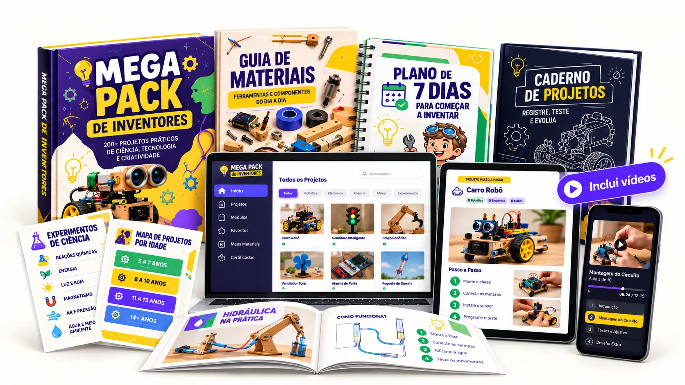
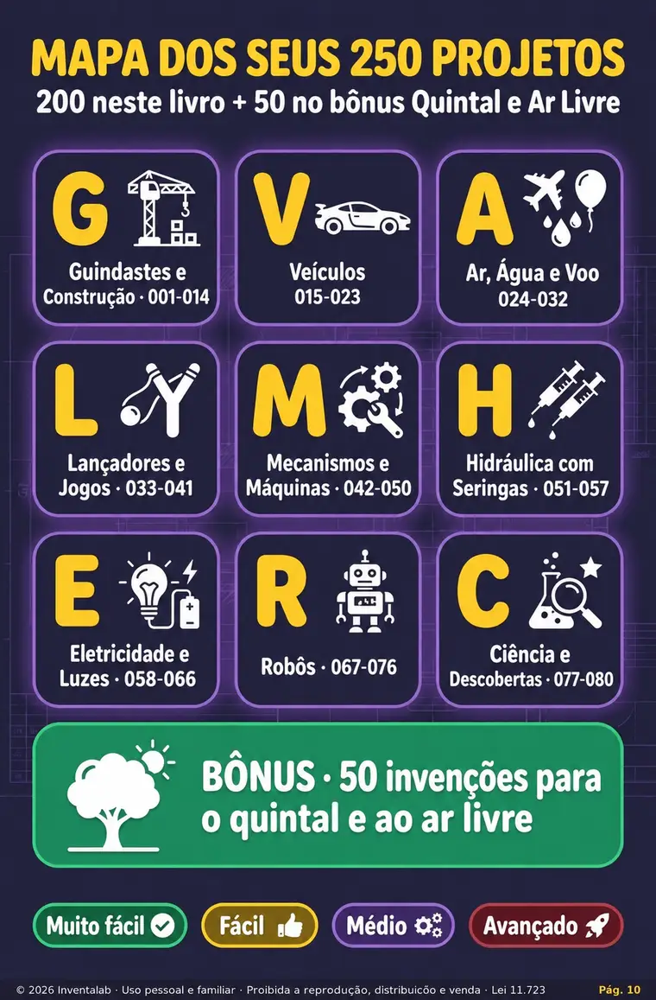
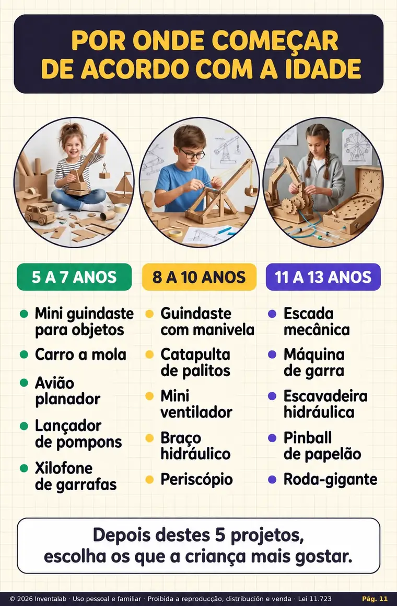
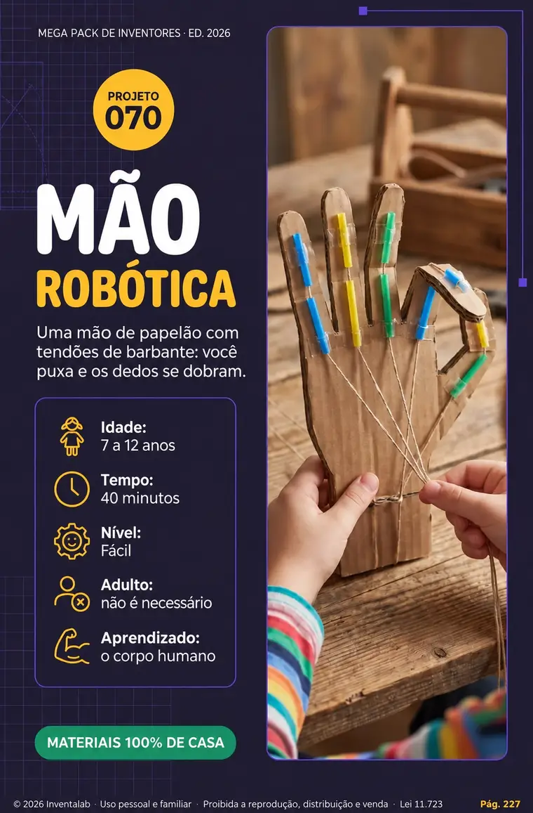
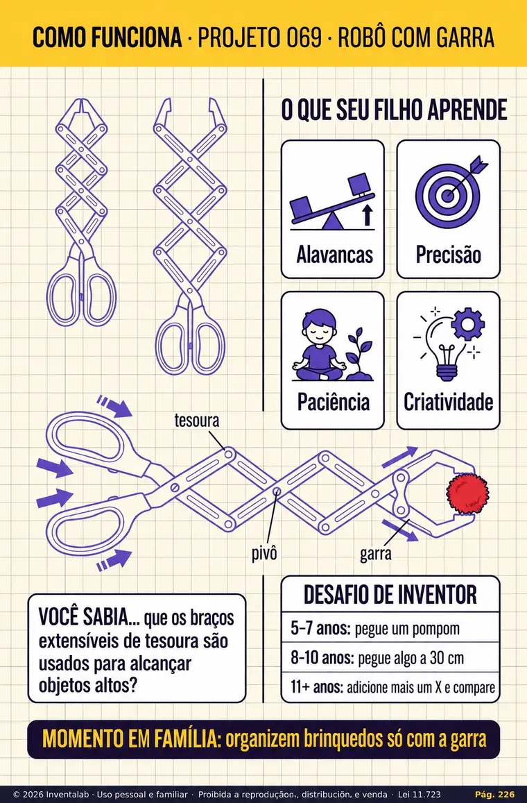
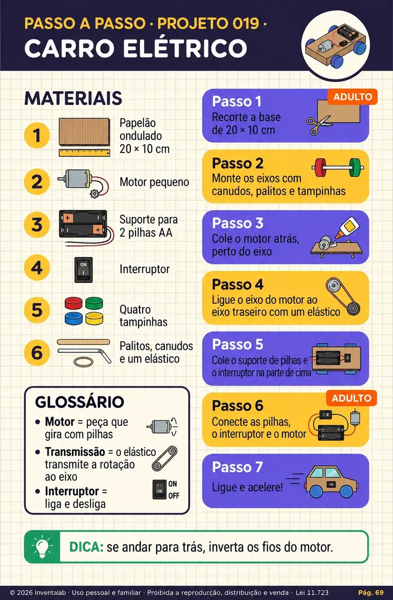
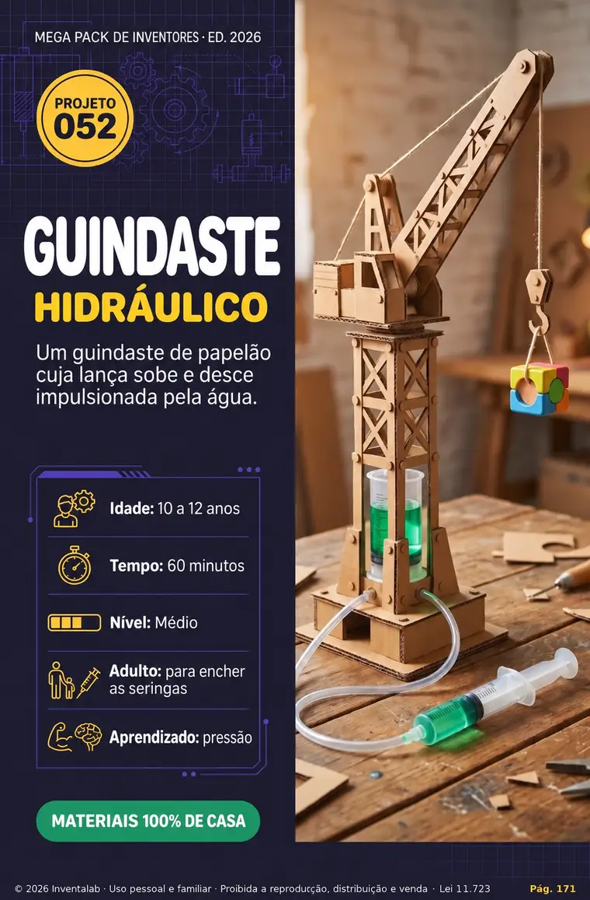

1 Construir
Siga as instruções com fotos, materiais, etapas numeradas e dicas para adultos.
Descubra mais de 200 projetos para fazer em casa, com instruções passo a passo e materiais acessíveis. Uma forma divertida de estimular a criatividade, despertar a curiosidade e aprender na prática.

Conteúdo digital. Vídeos adicionais disponíveis no Kit Completo.
Conheça alguns exemplos de como os projetos são apresentados: com imagens, materiais e explicações visuais.






Siga as instruções com fotos, materiais, etapas numeradas e dicas para adultos.
Entenda como cada projeto funciona: alavancas, circuitos, hidráulica e ar.
Experimente mudar alguma coisa e criar sua própria versão da invenção.
Escolha o projeto de acordo com a idade, o tempo disponível e a necessidade de ajuda de um adulto.
Em vez de apenas consumir conteúdo, seu filho pode testar ideias, descobrir como as coisas funcionam e se orgulhar do que construiu.
Invenções que estimulam perguntas, ideias e soluções próprias.
Experiências para explorar ciência e mecânica de forma prática.
Vários projetos podem começar com objetos comuns e reutilizáveis.
Uma oportunidade para pais e filhos construírem e descobrirem juntos.
Projetos para transformar curiosidade em experiências. Veja algumas áreas exploradas pelo material.
Modelos criativos e mecanismos simples.
Carrinhos e modelos com movimento.
Guindastes, mecanismos e construções.
Experimentos, descobertas e desafios.
Os kits foram organizados para que a família encontre novas ideias de acordo com o interesse e a idade da criança.
Compare as opções e selecione a que combina com a sua família.
Após a confirmação do pagamento, acesse os materiais digitais adquiridos.
Separe os materiais, siga as etapas e aproveite a experiência com seu filho.
Além da coleção principal, os dois kits incluem quatro materiais complementares para facilitar a experiência.
Prepare e aproveite materiais comuns do dia a dia.
Uma sequência simples para começar a inventar.
Continue explorando montagens e pequenos desafios.
Registre cada construção e as descobertas do caminho.
Compare os benefícios de cada opção. Ambos incluem os quatro bônus especiais e acesso aos materiais adquiridos.
Crie, explore e aprenda no seu ritmo.
Mais projetos, vídeos e conteúdos exclusivos.
Por R$ 18,00 a mais, o Completo inclui 50 projetos adicionais, dez vídeos, dois guias exclusivos e uma área de membros privada.
| O que você recebe | Essencial | Completo |
|---|---|---|
| Mais de 200 projetos | ✓ | ✓ |
| 50 projetos adicionais | — | ✓ |
| Acesso imediato e vitalício | ✓ | ✓ |
| Guia de Materiais Recicláveis | ✓ | ✓ |
| Plano de 7 Dias | ✓ | ✓ |
| Desafio de Robótica de 14 Dias | ✓ | ✓ |
| Diário do Pequeno Inventor | ✓ | ✓ |
| 5 vídeos de robótica | — | ✓ |
| 5 vídeos de experimentos | — | ✓ |
| Projetos para Feiras de Ciências | — | ✓ |
| Primeiros Circuitos | — | ✓ |
| Área de membros privada | — | ✓ |
Ao escolher um kit, você será direcionado para a Hotmart, onde poderá consultar o valor final, as formas de pagamento e as condições aplicáveis à compra antes de finalizar o pedido.
Não. É uma coleção de materiais digitais que você pode consultar em dispositivos compatíveis. Os materiais usados nas construções não são enviados.
O Essencial inclui mais de 200 projetos e quatro bônus. O Completo inclui tudo isso, 50 projetos adicionais, dez vídeos, dois materiais exclusivos e acesso à área de membros privada.
A oferta prevê acesso após a confirmação do pagamento. Siga as orientações de acesso fornecidas após o pagamento, usando o e-mail informado na compra.
O material apresenta projetos em diferentes níveis. Crianças podem precisar da ajuda e supervisão de um adulto, conforme a atividade.
Os cinco vídeos de robótica prática e os cinco vídeos de experimentos científicos fazem parte do Kit Completo.
Os projetos podem exigir materiais diferentes. Vários usam papelão e objetos reutilizáveis; componentes elétricos ou ferramentas precisam ser adquiridos separadamente, quando indicados.
Não. A área de membros privada faz parte do Kit Completo. O Essencial inclui acesso aos materiais previstos na sua oferta.
Escolha um kit, prepare os materiais e descubra novas possibilidades com seu pequeno inventor.
QUERO ESCOLHER MEU KIT